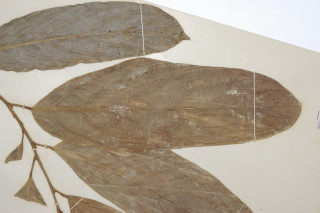
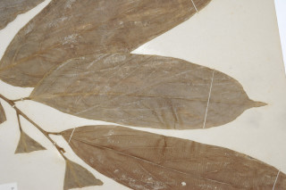
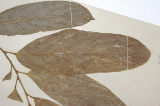
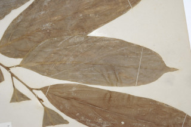

Trees up to 15 m tall.
15 ಮೀ. ಎತ್ತರದವರೆಗೆ ಬೆಳೆಯುವ ಮರಗಳು.
15 മീറ്റര് വരെ ഉയരമുളള മരങ്ങള്.
மரங்கள், 15 மீ. உயரம் வரை வளரக்கூடியது.
Young branchlets terete, minutely pubescent.
ಕಿರುಕೊಂಬೆಗಳು ದುಂಡಾಗಿದ್ದು ಸೂಕ್ಷ್ಮ ಮೃದುತುಪ್ಪಳದಿಂದ ಕೂಡಿರುತ್ತವೆ.
ചെറുതായി നനുത്ത രോമിലമായ, ഉരുണ്ട ഇളംശാഖകള്.
சிறிய நுனிக்கிளைகள் குறுக்குவெட்டுத் தோற்றத்தில் வளையமானது, நுண்ணிய உரோமங்களுடையவை.
Leaves simple, alternate, distichous; stipules caducous; petiole 1.2-2 cm long, swollen at apex, pubescent, lamina 17-30 x 6-10 cm, oblong, apex abruptly caudate - acuminate, base acute and asymmetric, margin entire, coriaceous, minutely pubescent on midrib beneath; midrib raised above; secondary_nerves 6-8 pairs, obliquely ascending towards apex; tertiary_nerves closely and horizontally_percurrent.
ಎಲೆಗಳು ಸರಳವಾಗಿದ್ದು ಪರ್ಯಾಯ ಮಾದರಿಯಲ್ಲಿ ಜೋಡಣೆಗೊಂಡಿದ್ದು ಕಾಂಡದ ಎರಡೂ ಕಡೆ ಎದುರು ಬದರಿನ ಸಾಲಿನಲ್ಲಿರುತ್ತವೆ;ಕಾವಿನೆಲೆಗಳು ಉದುರಿ ಹೋಗುವಂತವು; ತೊಟ್ಟುಗಳು 1.2 -2 ಸೆಂ.ಮೀ. ವರೆಗಿನ ಉದ್ದ ಹೊಂದಿದ್ದು ತುದಿಯಲ್ಲಿ ಊದಿಕೊಂಡಿರುತ್ತದೆ ಮತ್ತುಮೃದು ತುಪ್ಪಳದಿಂದ ಕೂಡಿರುತ್ತದೆ; ಪತ್ರಗಳು 17-30X6-10ಸೆಂ.ಮೀ.ಗಾತ್ರ ಹೊಂದಿದ್ದುಚತುರಸ್ರದ ಆಕಾರ ಹೊಂದಿದ್ದು,ಥಟ್ಟನೆ ಬಾಲರೂಪಿ- ಕ್ರಮೇಣ ಚೂಪಾಗುವ ತುದಿ,ಚೂಪಾದ ಮತ್ತು ಅಸಮವಾದ ಬುಡ ಮತ್ತು ನಯವಾದ ಅಂಚು ಹೊಂದಿರುತ್ತವೆ; ಮೇಲ್ಮೈ ತೊಗಲನ್ನೋಲುವ ಮಾದರಿಯಲ್ಲಿರುತ್ತದೆ;ಪತ್ರದ ತಳ ಭಾಗದ ಮಧ್ಯ ನಾಳ ಸೂಕ್ಷ್ಮ ಮೃದು ತುಪ್ಪಳದಿಂದ ಕೂಡಿರುತ್ತದೆ;ಮಧ್ಯನಾಳ ಪತ್ರದ ಮೇಲ್ಭಾಗದಲ್ಲಿ ಮೇಲೆದ್ದಿರುತ್ತದೆ;ಎರಡನೇ ದರ್ಜೆಯ ನಾಳಗಳು 6-8 ಜೋಡಿಗಳಿದ್ದು ಅಗ್ರದ ಕಡೆಗೆ ಓರೆಯಾಗಿ ಆರೋಹಣಗೊಳ್ಳುತ್ತವೆ;ಮೂರನೇ ದರ್ಜೆಯ ನಾಳಗಳು ಕಡಿಮೆ ಅಂತರದಲ್ಲಿದ್ದು ಲಂಬ ರೇಖೆಗೆ ಸಮಕೋನದಲ್ಲಿದ್ದು ಎಲೆದಿಂಡಿಗೆ ಅಡ್ಡವಾಗಿ ಕೂಡುವಂತವು.
ലഘുവായ ഇലകള് ഏകാന്തരക്രമത്തില് തണ്ടിന്റെ രണ്ടുഭാഗത്ത് മാത്രമായടുക്കിയതാണ്; എളുപ്പം കൊഴിഞ്ഞ് വീഴുന്ന അനുപര്ണ്ണങ്ങള്; നനുത്ത രോമിലമായതും അറ്റംവീര്ത്തതുമായ ഇലഞെട്ടിന് 1.2 സെ.മീ മുതല് 2 സെ.മീ വരെ നീളം; പത്രഫലകത്തിന് 17 സെ.മീ മുതല് 30 സെ.മീ വരെ നീളവും 6 സെ.മീ തൊട്ട് 10 സെ.മീ വരെ വീതിയും, ആയതാകൃതിയുമാണ്, പത്രാഗ്രം പെട്ടെന്നവസാനിക്കുന്ന വാലുളള-ദീര്ഘാഗ്രമാണ്, പത്രാധാരം അസമമായ നിശിതമാണ്, അരികുകള് അവിഭജിതമാണ്, ചര്മ്മിലപ്രകൃതം, കീഴെ മുഖ്യസിര നനുത്ത രോമിലമാണ്; മുഖ്യസിര മുകളില് ഉയര്ന്നുനില്ക്കുന്നതാണ്; അറ്റത്തോടടുത്ത് ചരിഞ്ഞ് ആരോഹണക്രമത്തിലുളള 6 മുതല് 8 വരെ ജോഡി ദ്വിതീയ ഞരമ്പുകള്; തിരശ്ചീനമായി അടുത്ത പെര്കറന്റ് വിധത്തിലുളള ത്രിതീയ ഞരമ്പുകള്.
இலைகள் தனித்தவை, மாற்றுஅடுக்கமானவை, இருநெடுக்கு வரிசையிலையடுக்கம் (டைஸ்டிக்கஸ்); இலையடிச்செதில் எளிதில் உதிரக்கூடியது; இலைக்காம்பு 1.2-2 செ.மீ. நீளமானது, காம்பின் நுனிப்பகுதி உப்பியவை, உரோமங்களுடையது; இலை அலகு 17-30 X 6-10 செ.மீ., நீள்வட்டம், அலகின் நுனி சிறிய வால்-அதிக்கூரியது, அலகின் தளம் கூரியது, மற்றும் சமமற்றது, அலகின் விளிம்பு முழுமையானது, கோரியேசியஸ், அலகின் பின்புறத்திலுள்ள மையநரம்பு நுண்ணிய உரோமங்களுடையது; மையநரம்பு மேற்புறத்தில் அலகின் பரப்பைவிட உயர்ந்தது; இரண்டாம் நிலை நரம்புகள் 6-8 ஜோடிகள், சிறிது சாய்ந்து நுனி நோக்கி வளைந்தவை; மூன்றாம் நிலை நரம்புகள் நெருக்கமான மற்றும் விளிம்பு நோக்கியவாறு இணையான பெர்க்கரண்ட்.
Flowers in fascicles on short peduncles on older branches, white; stamens many.
ಹೂಗಳು ಹಳೆಯ ಕವಲುಗಳ ಮೇಲಿನ ಕಿರು ಉದ್ದದ ವೃಂತಗಳ ಮೇಲಿನ ಗುಚ್ಛಗಳಲ್ಲಿದ್ದು ಬಿಳಿ ಬಣ್ಣ ಹೊಂದಿರುತ್ತವೆ;ಕೇಸರಗಳು ಅನೇಕ..
ധാരാളം കേസരങ്ങളുളള, വെളുത്ത പൂക്കള്, മൂത്തശാഖകളില് ചെറുതണ്ടുളള കൂട്ടങ്ങളായുണ്ടാകുന്നു.
மலர்கள் தொகுப்பாக ஒர் மிகச்சிறிய மஞ்சரி காம்பில் காணப்படுபவை, முதிர்ந்த இலைகளில் தோன்றுபவை, வெள்ளை நிறமானது, மகரந்ததாள்கள் எண்ணற்றவை.
Berry, woody, globose, to 15 cm across, dark brown tomentose; seeds numerous, angular.
ಬೆರ್ರಿಗಳು ಗೋಳಾಕಾರದಲ್ಲಿದ್ದು 15 ಸೆಂ.ಮೀ.ವರೆಗಿನ ಅಡ್ಡಗಳತೆ ಹೊಂದಿರುತ್ತವೆ ಮತ್ತುಕಡು ಕಂದು ಮೃದುತುಪ್ಪಳದಿಂದ ಕೂಡಿರುತ್ತವೆ ಹಾಗೂ ದಾರುವಿನಂತಿರುತ್ತವೆ; ಬೀಜಗಳು ಅನೇಕ.
കോണാകാരത്തിലുളള ധാരാളം വിത്തുകളുളള കായ, കനത്ത കടുംതവിട്ട് നിറത്തിലുളള രോമിലമായ, 1.5 സെ.മീ കുറുകേയുളള, മരംപോലുളള ഗോളാകാര ബെറിയാണ്.
முழுச்சதைகனி (பெர்ரி), தடித்தவை, கோளவடிவானது, 15 செ.மீ. குறுக்களவுடையது, கருமையான ப்ரவுன் நிறமான உரோமங்களுடையது, விதைகள் எண்ணற்றவை, கோணங்களுடையது.

 


